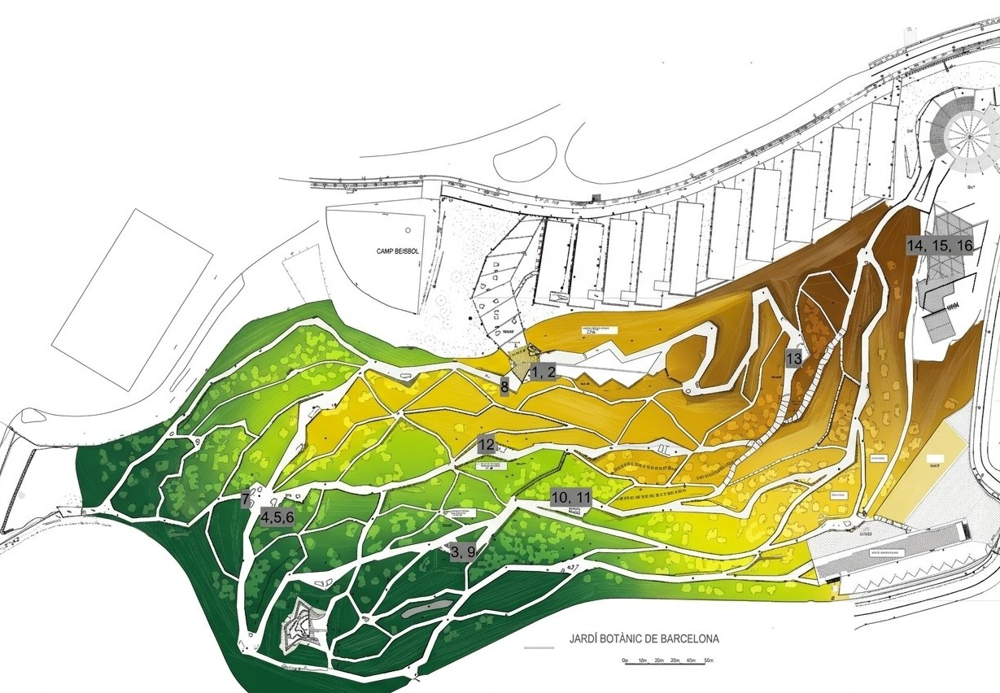

The Exhibition
Dreams from the Rooftop · Barcelona Botanical Garden · June – September 2026
Barcelona has been designated UNESCO–UIA World Capital of Architecture for 2026 — the first city to hold this title in the congress's modern form. The designation is both recognition and responsibility: an invitation to make the case, before an international professional audience, that architecture is not a specialist concern but a shared civic language. That space is political. That design is democracy made material.
Selected through an open call and fully funded by the Barcelona City Council, Parlour Gardens: Dreams from the Rooftop serves as a core component of the UNESCO–UIA World Capital of Architecture 2026 official programme. This exhibition is designed to fit within a city-wide framework focused on architectural quality, the transformation of urban models, and the strengthening of the local architecture ecosystem. Hosted at the Barcelona Botanical Garden from June to September 2026, the project creates a unique multidisciplinary intersection by integrating art, technology, architecture, and landscape design. It bridges a century of innovation—pairing a historic 1927 ceramic model with contemporary visions produced thanks to the latest ceramic 3D printing techniques and living vegetation—to redefine the urban rooftop as a vital space of ecological and social possibility.

The exhibition finds its home in a venue that is itself a triumph of ecological transformation: the Barcelona Botanical Garden. Designed by architects Carlos Ferrater and Josep Lluís Canosa alongside landscape architect Beth Figueras for the 1992 Olympics, this 14-hectare site on Montjuïc was reclaimed from a former landfill to become a world-class ecological showcase. Its unique triangular mesh structure fractalizes the Mediterranean landscape, organizing flora into specific homoclimatic zones: California, Chile, South Africa, Australia, and the Mediterranean.
Key Dates